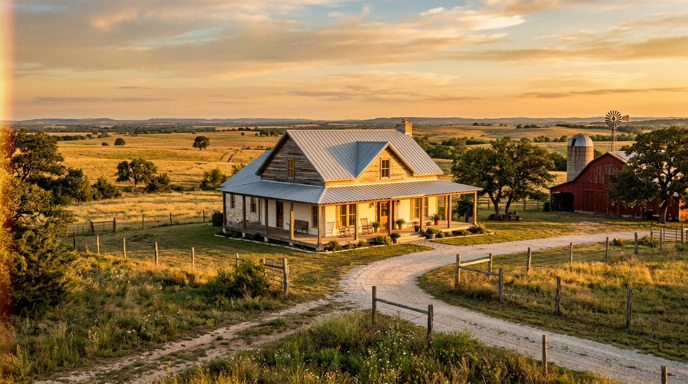

The USDA Rural Development program offers true 100% financing on eligible properties across rural and small-town Texas. If your dream home sits outside a major metro, this might be the program you have never heard of.

USDA is the best-kept secret in mortgage. Zero down, no PMI in the traditional sense, and most of rural Texas qualifies.
USDA is location-dependent. If your target area qualifies and your income fits the cap, this is hard to beat.
Every Guarantee Mortgage loan officer walks you through each step in plain English. No surprises, no jargon, no hidden fees.
We check the property address against the USDA map and confirm your income against the county cap, same day.
Standard income, asset, and credit review. Letter typically issued within 24 to 48 hours.
Shop the eligible inventory. Your agent can filter the MLS for USDA-eligible properties.
USDA loans require a final guarantee step from the agency itself, which adds a few days. Most close in 30 to 40.
One short application, 200+ lenders bidding for your business. See your real rate, your real payment, and your closing costs before you commit.